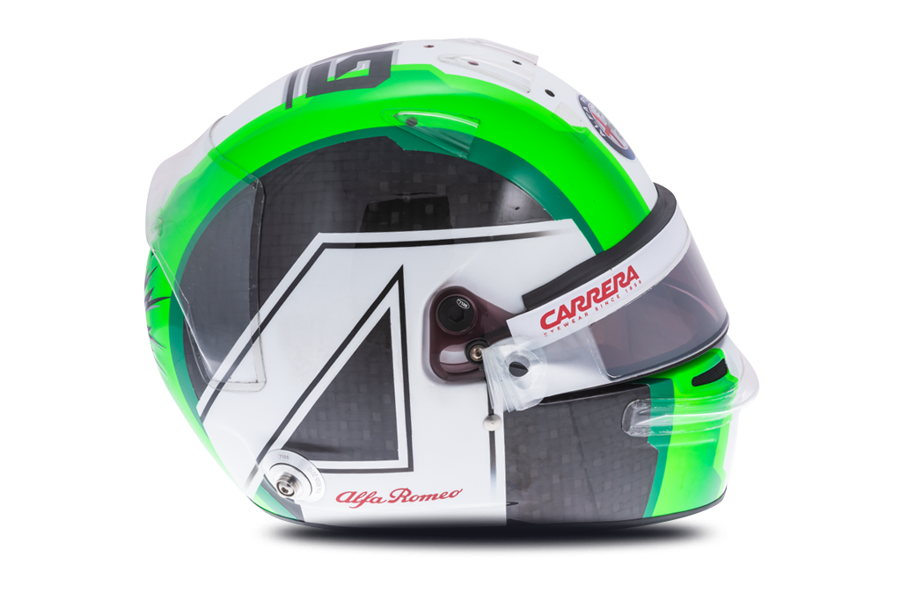

99 
Antonio Giovinazzi

| Team | Alfa Romeo |
| Country | Italy |
| Podiums | N/A |
| Points | 0 |
| Grands Prix entered | 4 |
| World Championships | N/A |
| Highest race finish | 11 (x1) |
| Highest grid position | 14 |
| Date of birth | 14/12/1993 |
| Place of birth | Martina Franca, Italy |
Biography
He’s the Italian steed with speed from the stable of the Prancing Horse. Antonio Giovinazzi flies the flag for Italy as the motorsport mad nation champs at the bit for its next F1 star.
The pilota from Puglia can punch his way through the pack and pull off a plucky pass. He showcased this natural racing acumen during a blistering 2016 GP2 campaign where he finished a close runner-up to team mate Pierre Gasly.
Giovinazzi concedes he went from hero to zero after two races as a stand-in for Sauber in 2017 when a brilliantly composed F1 debut in Melbourne was followed by two shunts in Shanghai. But a stint as Ferrari reserve gave him time to re-group and reflect ahead of his first full season in 2019, where he’s paired alongside Kimi Raikkonen at Alfa Romeo Sauber.
The notion of a home-grown racer with the iconic Alfa Romeo brand is irresistible to many - now Giovinazzi has to prove he’s the next Italian for the job.